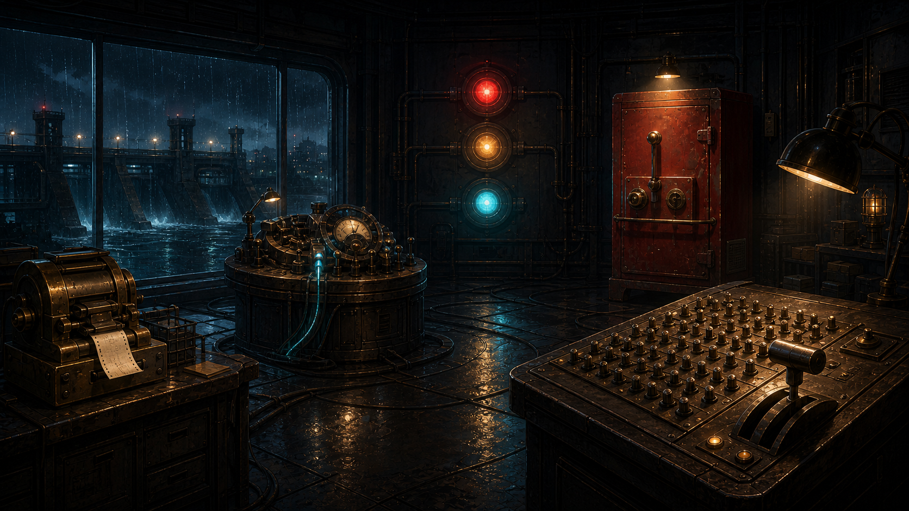

雨夜调查局 · 第 04 案
AI行为调查局
午夜回电
调度台宣布河闸已经开启。
可那通证明完成的回电，从未响起。
接入午夜线路
→
查看回声档案
← 返回主页
返回案件目录
CASE
04
一场关于“开闸命令发出以后发生了什么”的调查
A
午夜回电
AI行为调查局 · CASE 04
调查进度
0 / 5
返回主页
案件目录
?
◇
回声档案

01
接线回条机
02
等待回音的线路
03
三色来信灯
04
安全许可柜
05
呼叫乔
06
午夜总控台
回声网络节点 · ABI-ECHO-00/04
北岸河闸 · 午夜远程调度室
乔
×